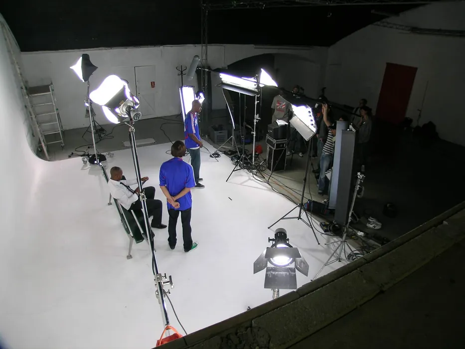
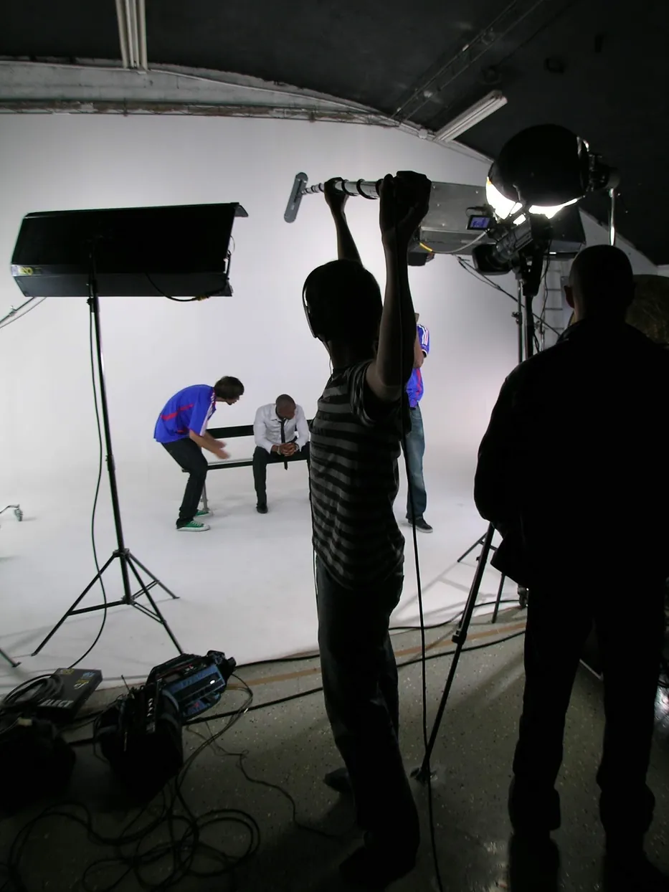
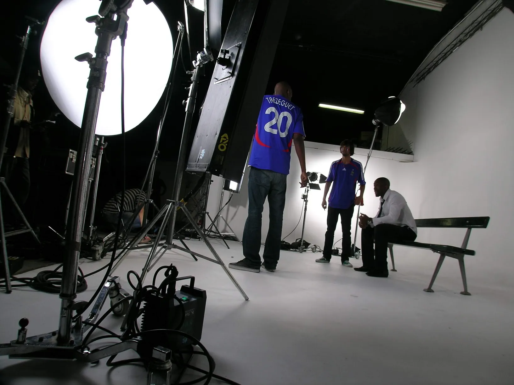
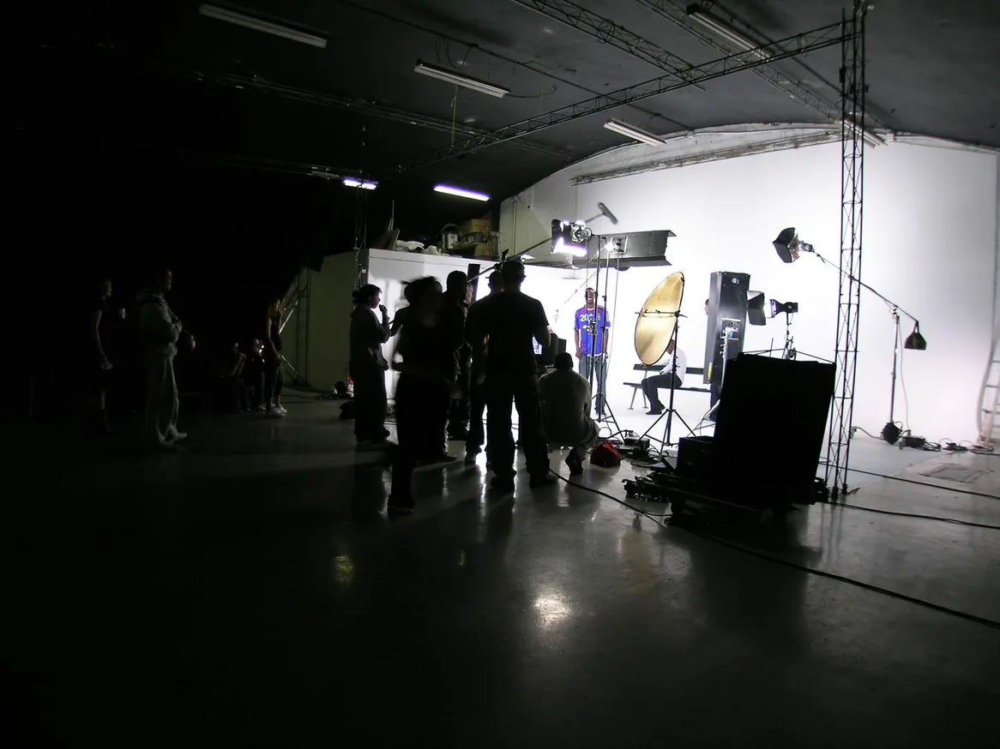
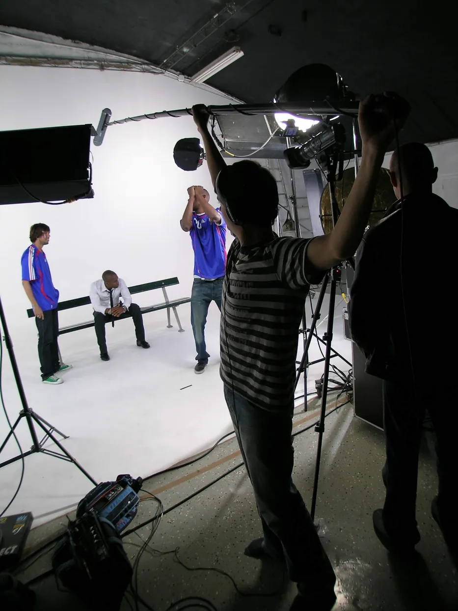
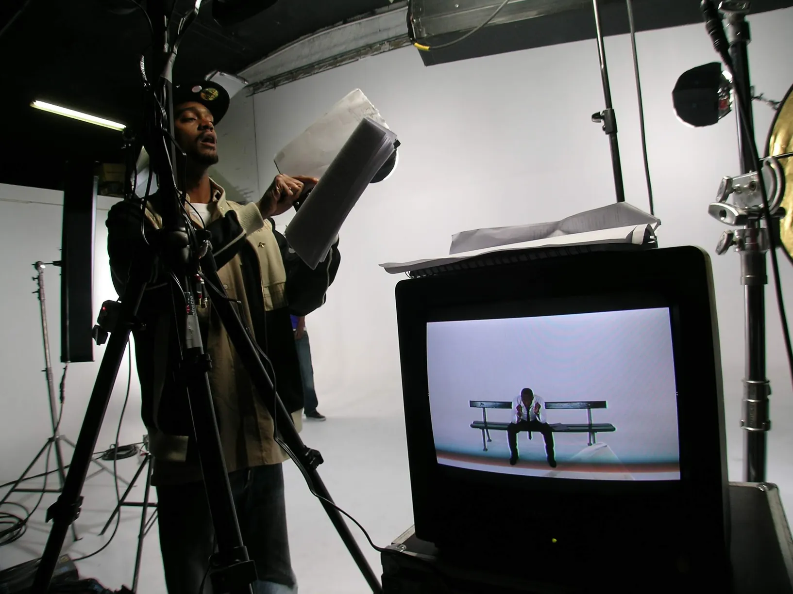
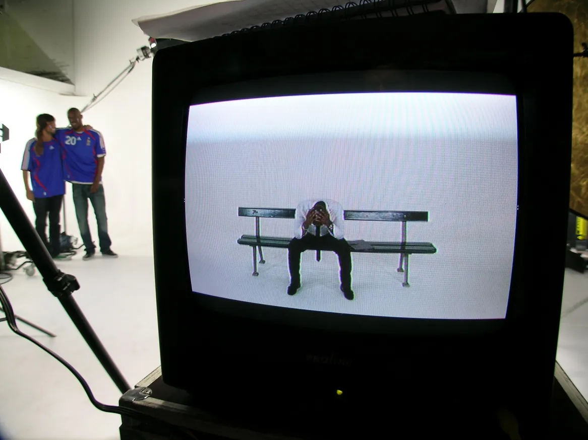
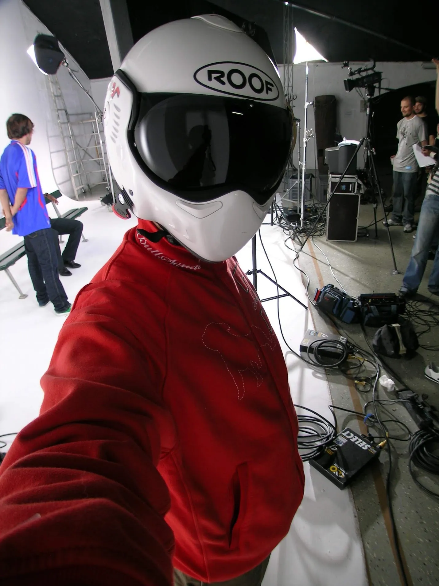

Le banc
A short title sequence, shot at Créart in Paris. A white cyclorama, a bench, a dozen actors in blue football shirts, and half a day to get it. Mr. Pinoux took the edit, the graphic treatment and the sound.
Un petit générique, tourné à Créart, à Paris. Un cyclo blanc, un banc, une dizaine d'acteurs en maillots de foot bleus, et une demi-journée pour l'attraper. Mr. Pinoux a pris le montage, l'habillage graphique et le son.
Créart, Paris, June 2007. A white cyclorama, a bench set down in the middle of it, and nothing else in the frame. Half a day of shooting, about ten actors, and a set list short enough that the whole thing was struck before the evening.
Créart, Paris, juin 2007. Un cyclo blanc, un banc posé au milieu, et rien d'autre dans le cadre. Une demi-journée de tournage, une dizaine d'acteurs, et un plan de travail assez court pour que tout soit démonté avant le soir.



The cast arrive in blue football shirts and sit down one after another. The bench fills, empties, fills again. On the CRT parked beside the camera you can watch it happening in the only frame that matters — one bench, centred, the white going on forever behind it.
Les figurants arrivent en maillots de foot bleus et s'assoient les uns après les autres. Le banc se remplit, se vide, se remplit encore. Sur le tube cathodique posé à côté de la caméra, on le voit se faire dans le seul cadre qui compte — un banc, centré, et le blanc qui continue derrière à l'infini.



Mr. Pinoux took the post: the cut, the graphic treatment laid over it, and the music and sound that carry it. On a title sequence that is most of the work — the shoot supplies the material and the sequence gets made afterwards, at a desk.
Mr. Pinoux a pris la post-production : le montage, l'habillage graphique posé dessus, et l'habillage musical et sonore qui le porte. Sur un générique, c'est l'essentiel du travail — le tournage fournit la matière, et la séquence se fabrique ensuite, à une table.


Somewhere in the middle of it a full-face motorcycle helmet turns up and gets worn for a photograph, for no reason connected to the job. Half-day shoots in a white studio produce that sort of thing. It is in the set because it was in the day.
Quelque part au milieu, un casque intégral apparaît et se fait porter pour une photo, sans le moindre rapport avec le travail. Les demi-journées en studio blanc produisent ce genre de chose. Elle est dans la série parce qu'elle était dans la journée.